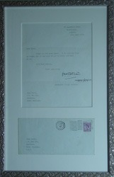

J.R.R. Tolkien
Take a closer look at the letter I received from J.R.R. Tolkien when I was 13.

Take a closer look at the letter I received from J.R.R. Tolkien when I was 13.
Check out some Nietzsche-inspired art by Earl R. Nitzschke (click on truncated thumbnails for larger, complete views).